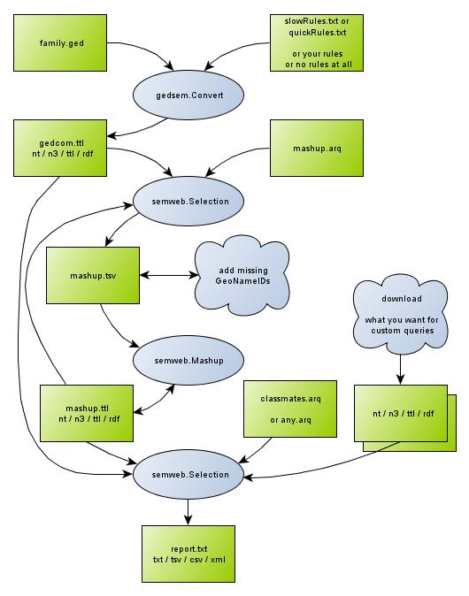

|
Author: Jo Pol. |
With external tools you can query more than just a single family tree, or create a batch that generates multiple reports in one go.
This is a very brief introduction but it should have the most important pointers to start browsing the web about the subject. The semantic web uses triples of URI's: subject predicate object. These triples are also called statements. These triples can be stored in different formats. RDF is the most widely supported format. The turtle format is much less verbose and therefore easier to read. The triples get meanings with ontologies (also expressed in triples) though a human can guess a lot without following the mathematical definitions. The mother of all ontologies is OWL. An ontology also implies inference. For example: A isAncesterOf B, B isAncestorOf C -> A isAncestorOf C. At the moment applying full-fledged inference is slow. Common practice is to apply just the rules you actually need.
The conversion performed by the plugin does not comply to an established ontology. Cross site queries and inference would be easier when using something like FOAF or a similar ontology. The chosen format however was quick and easy to implement and is easy to recognise by GedCom tigers. It might be wise to monitor for ontologies that might emerge and could replace the quick-and-dirty approach. A start is made with an ontology to bridge the gap between the unorthodox format and the web. The status is not clear but you can find the plain text file
The current GUI lets you query just a single family tree. The batch commands however allow to cross-query multiple family trees and/or data from the web. DbPedia could be an interesting almanac, for example to find famous contemporary local people. GeoNames is interesting for maps.
You may find more interesting resources via
The plugin uses the jena library to perform its tasks. Jena.apache and other products also have command line tools for similar tasks.
The plugin functionality can also be executed from a command line. Thus you can assemble a list of reports you want to run every once in while, in stead of having to launch them one by one. Note that the command line version allows to run a query against multiple sources, the report view runs queries just against the converted gedcom. The GUI allows to run reports for a specific entity, something the command line can't: you would have to duplicate the queryfile and replace %s manually with the desired ID.
To get started: create a new folder and download the files
Edit the reports file, follow the instructions inside it. The diagram below illustrates what the reports command file will do when launched.
Note that semweb.Mashup uses places to build a bridge between your family data and data on the web. This function is not (yet?) available in the GUI. The mashup takes some 6 minutes and creates about 250KB with the Kennedy example. The reports command pauses a few times to let you inspect the intermediate results. One of these times it asks to add missing GeoNameID's. If you chose the Kennedy example, you can overwrite the generated tsv with the kennedyMashup.tsv, otherwise follow these instructions. Once you get the hang of it, you can duplicate the last semeweb.Select with other query files and output files.

GeoNameIDs can create a bridge between
your family data and the data on the web.
The file mashup.ttl in the diagram is the bridge,
the semweb.mashup command builds the bridge.
As long as the geo plugin does not provide an export,
you will have to create the file mashup.tsv
with mashup.arq.
The first time you run the query,
it won't produce GeoName URI's in the first column.
The semweb.mashup command needs a tab separated file as input,
so make sure to run mashup.arq with tsv as output.
You will have to add missing GeoNameIDs in the first column.
You might use a spreadheet program,
but make sure to save as a tab separated file:
screenshot.
Keep the places in the second column of the tsv file,
together with all their jurisdictions and separators between them.
Search the places on www.geonames.org with the show-on-map button
The balloons with details shows a GeoNameId,
put that ID in the first column of the tsv:
screenshot.
Try the mashup query dbpediaLanguages.arq Note that not all can be queried directly.
The free services of GeoNames and DbPedia are not allways reliable so you might have to repeat semweb.Mashup. The command semweb.Mashup is designed not to download from GeoNames again what is already present. DbPedia is allways queried to create direct links, but nothing is downloaded because it is too much and can be queried directly.
You probably saved the arq file as an UTF-8 with a byte-order-mark. Typically Window's NotePad adds that BOM when you choose to save as UTF-8. Normaly these bytes do not show, but with the command "type" in a command window, they show up as funny characters. Try to save as ANSII.
This is a bug. Workaround known so far:
Save your gedcom with another name, filter by properties, exclude tag FILE.
Use that copy for your conversion.
...
FAQ about jena command utils
arq command complains about prefixes.This might have one of the following causes:
a) Remove the warnings
in your variant of merged.n3
b) The mashup example contains explicit namespace prefixes. The other examples don't, the plugin fills in the prefixes. So copy the required prefixes of the mashup query into the other queries if you want to use them with the command line.
arq command complains about Triples not terminated by DOT
The format N3 and TTL may reduce the predicates
rdf:type and owl:sameAs to
"a" respectively "=".
It looks like arq does not (yet?) support the latter.
So replace the predicate "=" by "owl:sameAs"
in the file merged.n3
The plugin inserts an XSLT reference into the xml. Browsers may apply that transformation into HTML. You may choose to do XSLT processing with JavaScript or insert on XSLT reference manually, add as second line:
<?xml-stylesheet type="text/xsl" href="http://www.w3.org/TR/rdf-sparql-XMLres/result-to-html.xsl"?>
NOTE that most browsers don't like cross-site scripting, so save the XSL file in the same domain as your query result.
{kind=link}
{kind=link}